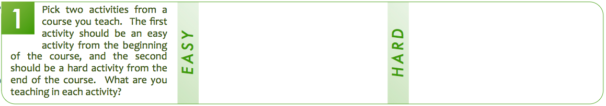

Levels of Learning
Web & Mobile Design & Development
Overview
- Learning Domains
-
Levels of Learning
- Application
- Curriculum
- Student Support
Who am I and what is this?
- My name is Rick Osborne. I am a DC in the Web Design & Development and Mobile Development programs.
- I find its not uncommon to hear:
- Student:
I didn't know you wanted that.
- Teacher:
They just don't get it.
- Manager:
Don't we teach that?
- If we can't communicate with each other, the students don't have any hope of understanding.
What is Bloom's Taxonomy?
- A scaffolding framework for classifying learning objectives.
- Originally intended (1950s) to make it easier to:
- Write standardized tests
- Communicate what those tests really assessed
- Only one of many (20+) similar frameworks.
- Still a work in progress.
What is it not?
- Not intended as The One True Solution.
- Not going to solve every instructional design problem.
- Not always cut and dry. There are murky grey areas.
Section 1: Two Examples
- Find section 1 on your handout.

- Fill in two activities/lectures from a course.
- The Easy activity should be one that your students never have trouble with. (Maybe from Day 1?)
- The Hard activity should be one that students find tricky to absorb. (Maybe from later?)
- You don't need much detail ... yet.
Vocabulary: Domain
- EducatorSpeak for
area of interest
- Bloom's Taxonomy focuses on learning through interactions
- Similar to Multiple Intelligence Theory, in that is it also a way of thinking about learning & teaching
- M.I. is about presentation & context. Bloom is about assessment and categorization.
- When you hear
learning domain
, translate in your head to:
all of the ways to learn that are related to one method of interacting
Learning Domains
- What are you trying to influence?
Knowledge
Attitude